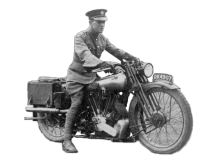
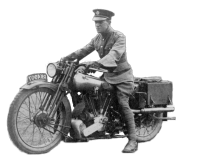

Can I Do This?
Talent Will not.
Nothing is more common then unsuccessful men with talent.
Genius will not.
Unrewarded genius is almost a proverb.
Education will not.
The world is full of educated derelicts.
Persistence and determination alone are omnipotent."
There seems to be basically three main types of people who take the Motorcycle Repair Course.
- People who don't want to really do the repair, but do want to know how.
- People who want to do the work on their own bikes and save money.
- People who want to earn some money repairing motorcycles.
Motorcycle repair schools or courses can cost up to $25,000. Ouch! Is there another way? I think there is, or at least a more logical path. No matter what you do, you will have to have tools, shop manuals, and you will have to actually do it. Look at the tool pages and get yourself a basic set. Now, you need a victim! Ask around, tell your friends, look in the want ads and find a cheap bike. Take it home, get a shop manual for it, read through the Online Motorcycle Repair Course and start going through it. If it runs, give it a complete tune-up. If it doesn't run, start troubleshooting it. Figure out what is wrong and fix it. Make it run and run good.
This may end up costing you a little money, but that's OK. Now think about this. If you are considering paying $15,000 for a motorcycle course why not spend two or three hundred for a broken bike and another three or four hundred to fix it? You need to know if you like doing this. If you don't, you still have the bike to ride or sell. If you do like fixing motorcycles, you are now in a much better position to decide if you really want to pony up a small fortune to learn more. If you find that this repair thing is OK, but you'd rather not do it all the time, you have fixed your bike, saved your bucks and can now ride. What could be better?
I like to visit the sites that link to me and one of them thought I was a bit optimistic in thinking you could do all these repairs on your motorcycle. He liked my site and a link is a link, right? However, I disagree with him. You can do it... if you want to.
When I first started working on bikes I knew absolutely nothing about it. How dumb was I? Well, when I got my first bike, a Honda 55cc, they showed me the starting drill. Turn on the gas, turn on the key, put on the choke, and kick. He then turned the key and gas off. Well, somehow I thought part of the startup drill was to turn off the little lever on the carb which was the fuel on/off lever. The little 55 would go several miles before it ran the float bowel out of gas. Then I would turn it on again, start it up, wonder "Why did it die ? It's always doing that!", and then TURN OFF the gas again! Well, I did this for a good month before I realized what I was doing. If I had known any less, the bike would not have run at all! Just by reading this far, you know more than I did! I wrote the "Online Motorcycle Repair Course" for this dumb kid who can barely figure out how to start his little bike. If I had had this information when I started twisting wrenches it would have saved me hundreds of hours of wasted labor, not to mention hundreds of dollars worth of ruined parts. Shoot, the spark plug page alone would have done that.
One young man e-mailed and said he just really wanted some kind of diploma from a school that said he knew what he was doing. Another man wrote and said he wanted to build custom bikes and sell them. He felt his future customers deserved a builder who had the best school training. I can understand their concerns. However, the quality of the job largely depends on the desire of the technician to do a good job and his willingness to spend the time to do the job right. Formal training is good, but desire to do a good job and experience is better. We assume you want to do a good job, right? That's why you are here and that's why you are considering paying a lot of money for formal education on the subject, but there is no substitute for experience. You need to do it, and you need to do it a lot.
The way to get that experience is to get an engine and JUST DO IT! Just getting started can be the hardest part of the whole job. For some reason everyone wants to do the job quickly and perfectly the first time, and they seem to think a formal class will do this for them. Sorry to say, it will not. Your first attempt, likely as not, will be a disaster. OK, so what? Everyone has to start somewhere. The really important thing is to keep at it and to do a better job, each time you try, than the time before. Got that? We want forward progress. Each job done better than the one before it.
It's best to buy a separate bike to work and learn on. That way you can jump on your main bike and go for a ride when things get frustrating, and they will get frustrating. Having a separate bike also allows you to spend as much time as is needed to do the job right. Another advantage is if you make a really big error, and you just might, the cost of the broken part is not so bad. This brings us to a very real fear all new mechanics have. What if I break a part? OK, what if you do ? Will the world end? I think not. If you use the right tools, in the right manner, take your time, and follow instructions, the risk of parts breakage is quite low.
If you just leap in, without thinking, in a big hurry, and without doing your home work, odds are you will break something. I'll give you an example I just read about. Two guys had Ducati motorcycles. They talked the mechanic into letting them watch while he adjusted their valves. With the valve mechanism all apart, the mechanic turned his back, to reach for a tool, and one of the guys walked up to his bike and turned the engine over. This bent his valves. Why did he do that. That was just a plain stupid thing to do. If you repeatedly do impulsive, stupid things, without thinking or caring, you will break parts. The cure? Change your behavior.
So, bottom line, what do you do? Easy!
- Get a cheap little bike. Say a 50-250cc, four stroke single, or even a two stroke single.
- Get some tools.
- Get the correct shop manual and read it.
- Read my online Motorcycle Course.
- JUST DO IT!
If the bike runs. Start with a simple tune-up. Do it several times till you are comfortable doing the tune-up. Then do the brakes. Take them apart and put them back together. Do it several times too. Get comfortable with your tools and the bike. Now go a little deeper. Take the head and cylinder off and put them back on again. Use new gaskets. If you have the money rebuild it with a new, oversize piston, valves, cam chain, and all the rest. Do it right. Reread the shop manual. Go back over the Motorcycle Course. Start collecting any shop manuals you can get. Read through them and Hi-light the parts you find interesting. I like to take a blue felt Hi-lighter and Hi-light all the specs. But that's just me. If the bike is not running, read the trouble shooting page and figure out what's wrong and fix it. The main thing is to JUST DO IT.
If you want to stack the odds in your favor and have the money to do so, get a running bike to learn on. Then you will know it's what you did and not something else, if it will not start, when you finish your first repair. What's that you say? It did start and now it won't? So what! I redid my first ever tune-up, on my main bike, on my one and only bike, on my running, one and only, I use it to get to school every day bike, three times before it would even start. It took another six or eight tries before it started to run good, and that was just for a lousy tune-up! A four stroke, single cylinder would be best, because two stroke bikes are on their way out because of pollution concerns. If you can only find a two stroke? That's OK. The important thing is to get started.
If it takes you try after try to learn how to do the job right, don't worry about it. This DOES NOT indicate you are stupid. Tests in both the United State's military and the Soviet Union's military showed that no matter how long it took personal to learn a specific task, once the task is learned, they could all do it every bit as well as personal that quickly learned the task. In other words, no matter how long it takes you to learn how to do a job, you can do it just as well as a person who learns to do it quickly. I'm not talking about how fast you do the job, but how fast it takes you to learn how to do it. So take your time when you learn. There is no hurry. Do it slow, do it right. The speed will come in it's own good time. Remember the Sniper's adage. "Slow is smooth, smooth is fast."
If you still seem to have trouble learning, it may be helpful to have someone read the Motorcycle Repair Course and/or shop manual to you. In the army, they always teach you the same way.
- Tell you how to do it.
- Show you how to do it.
- Have you do it.
Now if money is a problem, there are several ways around that. Although, if you were considering a formal $20,000 course, one would think a few hundred would not be a problem. Check this out. A guy e-mails me and says he wants to know how to take his rear wheel off but can't figure out how and he has no shop manual 'cause money's tight. Then he asks what aftermarket exhaust system will give him the most horsepower. He doesn't have money for a $30.00 shop manual, but does have money for a $300.00 exhaust system. Does this sound kinda stupid to you? Well, I cater to stupid people too, (been there, done that!) so I wrote up a page on wheel removal. Anyway, Ask around. Tell people what you are trying to do. You'll be surprised how often a friend, neighbor or uncle will have a bike and will just give it to you, once they know it will not go to waste. Same goes for tools. Put out the word and, once people see you are serious about this, many of them will be happy to help you out. Remember this, once you get going in mechanics, try to return the favor to some younger mechanic wana-be.
Take your time and do your homework. Remember Second Timothy 2:15
This applies not only to the Bible, but to your shop manual as well.
 |
 |
Copyright © 1999-2015 dansmc.com. All rights reserved.